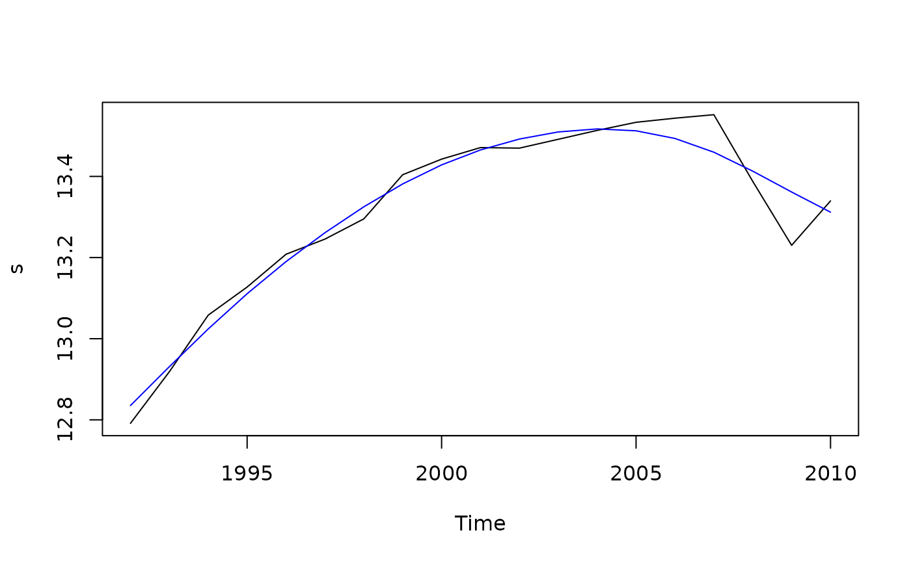

Estimate UCARIMA Model
Arguments
- x
Univariate time series
- ucm
An UCARIMA model returned by
ucarima_model().- stdev
TRUE if standard deviation of the components are computed
Examples
mod1 <- arima_model("trend", delta = c(1, -2, 1))
mod2 <- arima_model("noise", var = 16)
hp <- ucarima_model(components = list(mod1, mod2))
s <- log(aggregate(Retail$AutomobileDealers))
all <- ucarima_estimate(s, hp, stdev = TRUE)
plot(s, type = "l")
t <- ts(all[, 1], frequency = frequency(s), start = start(s))
lines(t, col = "blue")
